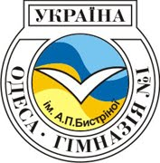
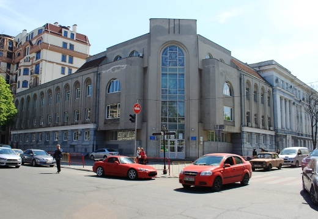
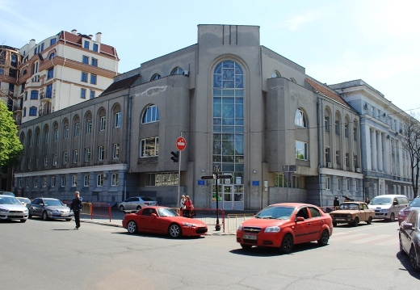

Одесская гимназия №1 имени А.П. Быстриной имеет глубокие исторические корни и является одним из старейших средних учебных учреждений города.
Ее родоначальницей была частная женская гимназия, основанная в 1864 году.
В 1872-м перешла в руки Ольги Владимировны Пиллер.
Именно благодаря ей она достигла высокого уровня развития и с 1882 года получила права “министерской”.
Кроме Анны Григорьевны Пиллер, ею руководили Ольга Владимировна Пиллер, Екатерина Семеновна Пашковская, София Адольфовна Куракина-Текелий, Ольга Густавовна Шольп.
В гимназии уделяли особое внимание преподаванию Закона Божьего, законоучителями были священнослужители одесских церквей, том числе и Покровской.
В тяжелый период 1920-30 гг. на смену женской гимназии пришла школа № 71 (фабрично-заводская семилетка), а затем средняя школа, которая работала в бывшем здании гимназии на улице Жуковского, 39.
С гимназией № 1 неразрывно связана трагическая страница истории религиозной Одессы.
Разрушена Покровская церковь на Александровском проспекте – один из старейших храмов города, второй по значимости после Спасо-Преображенского кафедрального сбора.
На месте разрушенного храма из его же камня построили новое здание, где с первого сентября 1936 года начала работу средняя школа № 119. Сюда из 71-й школы были переведены учителя, некоторые даже со своими классами. В декабре 1940 года школу расформировали, а в этом здании разместили специализированную военную школу № 14. Летом 1941 года спецшколу эвакуировали, а в помещении, на период обороны Одессы, поместили военный госпиталь. Средняя школа № 119 была частично разрушена и во время оккупации пустовала. Она начала действовать с 1953-го после восстановления здания.
Школа прошла свой славный путь в нелегких испытаниях и по праву считается одним из лучших средних учреждений города Одессы.
В апреле 2014 года гимназия справила своё 150-е летие.
В 1994 году школа была реорганизована в гимназию, директором гимназии №1 становится Алла Петровна Быстрина, ее имя присвоено гимназии Постановлением Кабинета Министров Украины от 31 марта 1999 года №504.

В составе высокопрофессионального педагогического коллектива 6 Заслуженных учителей Украины, 4 кандидата наук, 30 учителей-методистов, 7 старших учителей, Лучший педагогический работник города Одессы, 18 Отличников образования Украины.

Основные направления работы гимназии:
- внедрение в практику работы гимназии инновационных технологий, создание банка педагогических инноваций;
- методическое сопровождение профильного обучения;
- индивидуализация и дифференциация учебно-воспитательного процесса;
- организация мониторинговых исследований;
- организация работы по вопросам обмена опытом, адаптации к деятельности в гимназии в Школах - применение здоровьесберегающих технологий.
В составе высокопрофессионального педагогического коллектива 6 Заслуженных учителей Украины, 4 кандидата наук, 30 учителей-методистов, 7 старших учителей, Лучший педагогический работник города Одессы, 18 Отличников образования Украины.